Fire Emblem (ファイアーエムブレム Faiā Emuburemu, en español: Emblema de fuego) es una popular franquicia de videojuegos del género de RPG táctico
(estrategia y rol) desarrollada por Intelligent Systems, diseñada por Shouzou Kaga y distribuida por Nintendo. Fire Emblem se caracteriza por
la mezcla de los géneros de estrategia y rol, por ser pioneros en este tipo de juegos y por tener una gran influencia del folclore medieval europeo.
La serie consta de 15 juegos y cuatro mini-juegos para Satellaview, hasta el momento, y hay 3 juegos más anunciados. La saga ha visto la luz en la mayoría de
consolas de Nintendo (NES, SNES, Game Boy Advance, GameCube, Wii, Nintendo DS, Nintendo 3DS, Nintendo Switch) además de dispositivos móviles con Fire Emblem
Heroes, lanzado en 2017.
Fire Emblem: Rekka no Ken, el séptimo juego de la franquicia, se convirtió en el primer juego de la saga en lanzarse internacionalmente en 2003. Presentado
fuera de Japón con el escueto título de Fire Emblem: The Blazing Sword, el juego se diseñó principalmente para los nuevos jugadores occidentales. Teniendo
esto en cuenta, desde el primer capítulo se muestra un tutorial para aprender el modo de juego que dura diez capítulos. A partir de este juego, casi todos
los título de Fire Emblem han sido presentado internacionalmente (con la excepción del remake Fire Emblem: Shin Monshō no Nazo ~Hikari to Kage no Eiyū~).
A pesar de esto, los juegos anteriores a este siguen sin ver la luz en occidente.
La cronologia de la saga es:
Fire Emblem NES
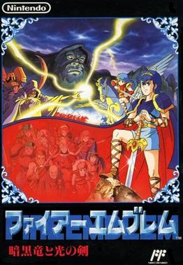
Fire Emblem "Gaiden" NES
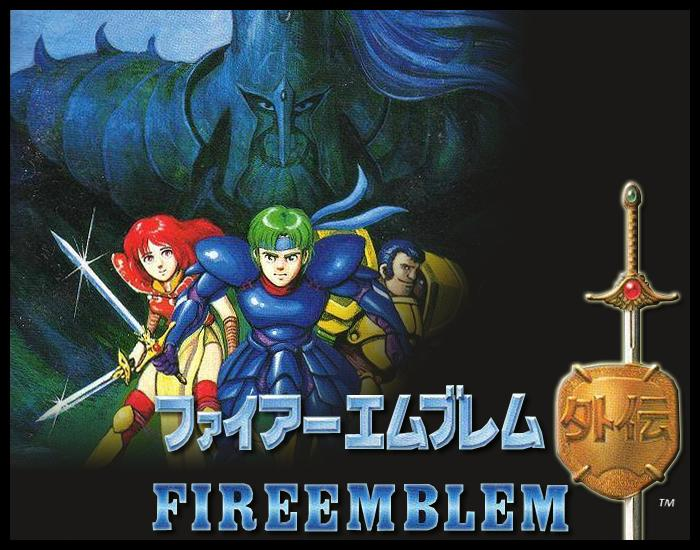
Fire Emblem "Mystery of the emblem" SNES
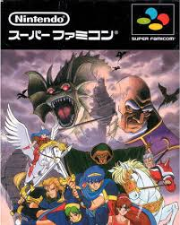
Fire Emblem "Genealogy of holy war" SNES
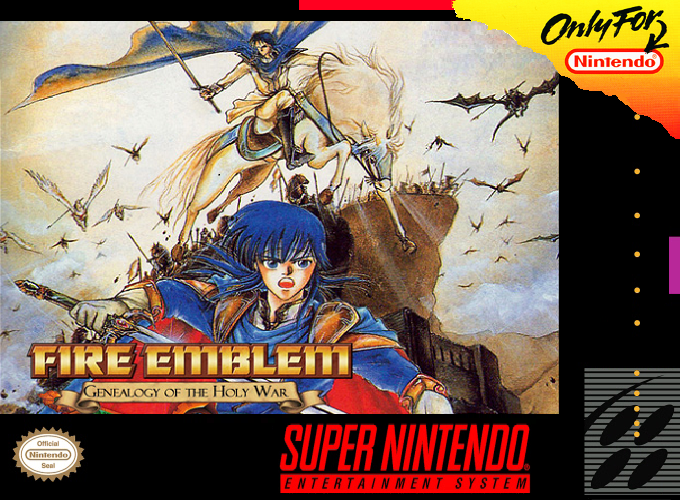
Fire Emblem "Thracia 776" SNES
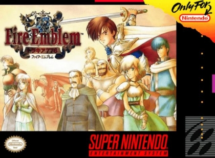
Fire Emblem "Sword of Seals" GBA
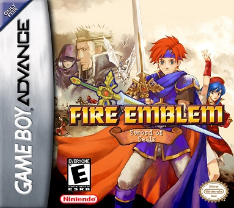
Fire Emblem "Blazing Sword" GBA
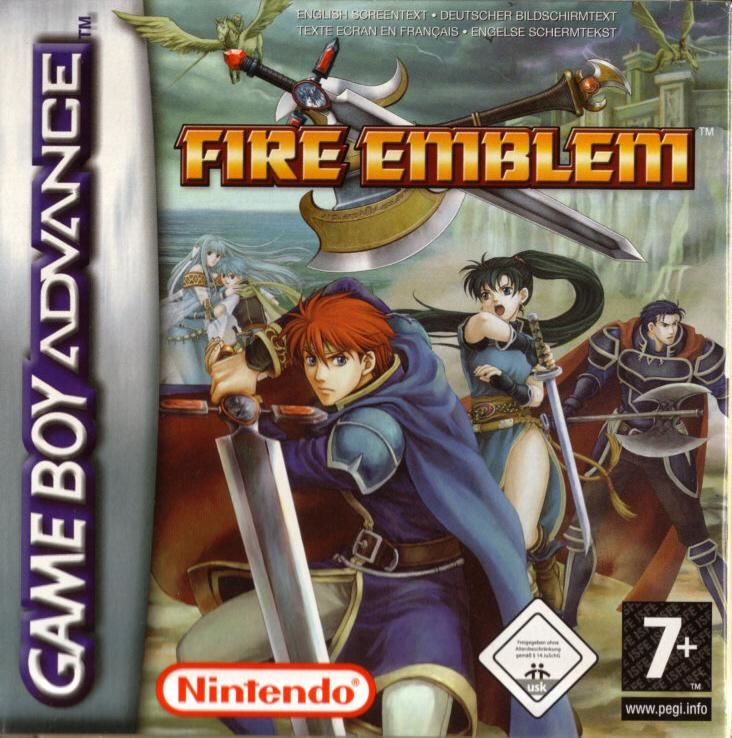
Fire Emblem "The Sacred Stones" GBA
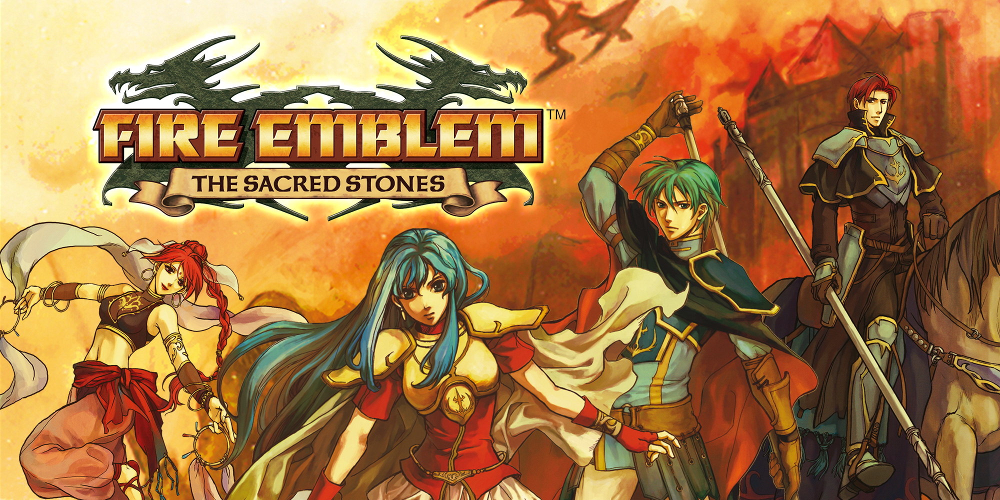
Fire Emblem "Path of Radiance" GC
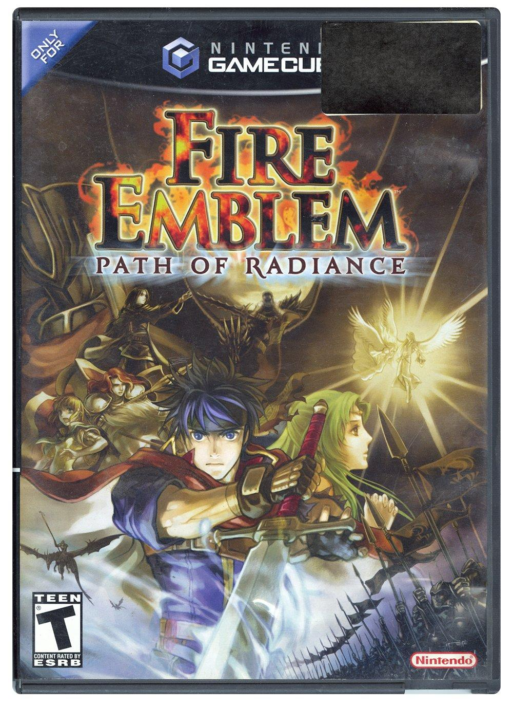
Fire Emblem "Radiant Dawn" WII
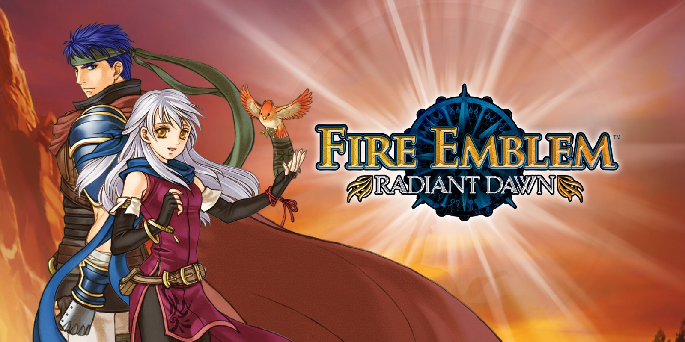
Fire Emblem "Shadow Dragon" DS
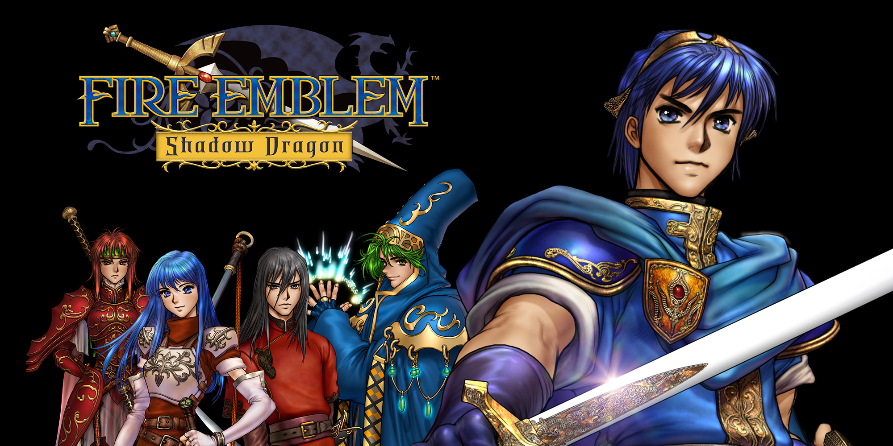
Fire Emblem "Shin monshou ryu to hikari no tsurugi" DS